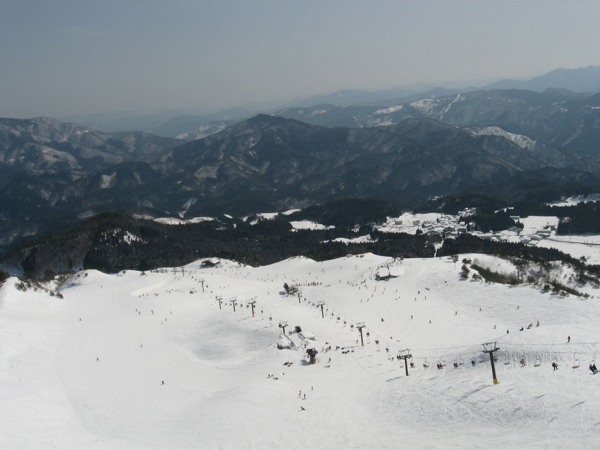

Hyogo · Yabu — Ski area guide
ハイパーボウル
東鉢
はじめての1本から、43°の急斜面まで。
たのしみ方を、動く図で。
- 東尾根コース
- 1,800m
- 最大斜度
- 43°
- コース
- 6本
- ペアリフト
- 4基
- 大阪・神戸から
- 120分
Your level
あなたはどのレベル？
えらぶと、おすすめコース・コース図・1日のプランが、そのレベル向けに変わります。
今日のおすすめ
コース制覇スタンプ
滑ったコースは、マップでコースを選んで「滑った！」を押すとスタンプがたまります（この端末だけに保存）。
あそびかたを探す
About
どんなスキー場？
兵庫県北部、鉢伏山（はちぶせやま）の東側にあるスキー場です。読みは「とうはち」。となりの スカイバレイ とつながっていて、リフト券は共通で使えます。
山頂は超ワイド
山頂は「一度味わうとやみつきになる」と評判の超ワイドなオープンバーン。中腹からは、さわやかな林間コースをクルージング。（公式の紹介より）
共通券で、尾根の向こうも
東鉢のリフト券（シーズン券も）で、尾根の向こうのスカイバレイ側のコースも滑れます。2つ合わせて「西日本最大級のBIGゲレンデ」。営業時間はそれぞれちがうので、帰りのリフトの時間に注意。（公式マップより）
独立したチビッコパーク
駐車場のすぐ近くに 3,000㎡。サンキッド（スノーエスカレーター）つき。小学生未満はリフト無料。口コミでは「比較的すいていて滑りやすい」という声も。
Course map
動くコース図
コースを選ぶと、図の上でそのコースが描かれ、滑る人が走ります。図は画面に止まったままなので、下のボタンを押しながら見くらべられます。
ピンチ・＋で拡大／ドラッグで移動
描いた線のデータ
この端末だけに保存されています。下のデータをコピーして Claude に送ると、アプリ本体のコースに反映できます。
※ 図は、ゲレンデマップ（パンフレット）の上に、選んだコースの線を重ねたものです。線の位置はおおよそです。今はない施設（3号リフト上の「ミニスノーパーク」、1号リフト終点の休憩所）は図から消し、スカイバレイのリフトは今の「ベアトリプルリフト」に直してあります。また、このマップは今のシーズンとコース名がちがう所があります（例：②「競技Aコース」の位置が、今の「東尾根下コース」）。コースの長さ・斜度・リフトの時間は公式サイトの数字です。最新のマップは公式のゲレンデマップで。
※ 3Dの地形：標高は国土地理院の数値標高モデル（5mメッシュ）、写真は国土地理院の航空写真（全国最新写真）。高さは見やすいように1.35倍にしています。近づくと、もっと細かい写真（約0.5m）に入れかわります。まわりの山（氷ノ山・日本海まで）も、同じ国土地理院のデータです。山の影と谷の暗さは、冬の午後（南南西の低い太陽）として標高から計算しています。「❄ 冬」は、写真の草地を雪の色にぬった見た目です。リフトの線は地理院地図の索道の位置です（東鉢・スカイバレイとも。斜面の長さは公式の数字の93〜98%）。コースの線は、航空写真のゲレンデの形と公式の説明から合わせたおおよその位置です。「🎿 目線」で滑るときは、上のボタンで見る位置（👀 目線・🎥 近く・🚁 遠く）と速さを変えられます。「✏️ 描く」で、点を押してコースの線を描きなおせます。
※ 同じゲレンデマップの右側（スカイバレイ側）です。線の位置はおおよそ。コースの長さ・斜度はスカイバレイの公式マップより。
Slope
斜度ってどのくらい？
「最大43°」と言われてもピンとこないもの。スライダーやコース名を押して、坂の角度と滑る速さを体感してください。
Course finder
30秒 コース診断
4つの質問に答えると、あなたに合うコースと回り方をおすすめします。
Basics
はじめての人へ
いちばん確実なのはスクールに入ること。コースは緑の線（初級）をたどれば、ふもとまで安心です。
初心者のおすすめルート
押すと、コース図でそのルートを動かして見せます。
ふもとからは4号リフトでカフェテリアへ行くと、3号リフトはすぐそこ（1号→センターBからも行けます）。大回りのコツは下の「③ スピード調整」で。無理は禁物！
スノーボード（土日祝）
東鉢のスクールは土日祝のスノーボードだけ。受付はかつら1号リフト横のリフト事務所1階。
午前：受付 9:30〜10:20／レッスン 10:30〜12:00
午後：受付 12:30〜13:20／レッスン 13:30〜15:00
東鉢ではレッスンの予約はしていません。（公式）
覚えたい3つの基本 ＋ 転び方
ポイント：速さより、ゆっくり安全に。それが上達のいちばんの近道です。
やりがちな失敗
- スピードの出しすぎ → 止まれなくなる
- 後ろ重心 → 板が暴れて転びやすい
- 急に止まろうとする → バランスをくずす
- コースの真ん中で休む → ぶつかる危険
周りをよく見て、早めの判断を！
リフトの乗り方
- 振り返る：乗り場の線で待ち、うしろを見てイスを確認
- ゆっくり座る：スノボは前足だけ装着。ストックは片手に
- すぐ離れる：板を前に向けて立ち、降りたら脇へよける
東鉢の4基はすべて2人乗り（ペアリフト）。
ひと休みスポット
- ふもとのレストラン
センターDの終点、駐車場のすぐ前。シルバーホルンは1号リフト乗り場の少し上。 - カフェテリア フライングフォックス
ゲレンデの中腹（3号・4号リフトのあいだ）。滑る途中のひと休みに。 - 無料更衣室＆パウダールーム
着がえやメイク直しに。4号リフトの近く。
わからないことは、気軽にスタッフへ（リフト事務所 079-667-8201）。
One day
1日のモデルプラン
いま選んでいるレベル：（ホームの「あなたのレベル」で変えられます）
Lift tickets
料金と1日の費用
人数とレンタルを入れると、だいたいの合計を出します。リフト券と駐車場は公式サイトの料金（2026年11月確認）です。
食事券付きは大人だけの券です（シニア・小学生は1日券で計算）。小学生未満はリフト無料。毎週金曜はレディースデイで、女性の1日券が1,000円引き（この計算には入れていません）。レンタル料金は店ごとにちがうので、ここでは旅行サイトの目安（一式3,500円・ウェア2,000円）で計算しています。
リフト料金（スカイバレイと共通）
| 券の種類 | 大人 | シニア（60歳以上） | 小学生 |
|---|---|---|---|
| 1日券 | 4,000円 特定日 4,500円 | 3,000円 特定日 3,500円 | 2,000円 |
| 1日券＋食事券 | 4,500円 特定日 5,000円 | — | — |
| 午前券（〜12:00）・午後券（12:00〜） | 3,000円 特定日 3,500円 | 2,000円 特定日 2,500円 | 1,500円 |
| 1回券 | 500円 | 500円 | 500円 |
特定日＝土・日・祝・1月1日〜3日。小学生未満は無料。チビッコパーク1日券（2歳以上）600円（リフト1日券・半日券でも利用可）。障害者割引 1,000円（大人1日券のみ・同伴者2名まで、手帳を提示）。支払いはクレジットカード・PayPayも可。
シーズン券（スカイバレイ共通）大人 40,000円・小学生 20,000円。早割シーズン券 大人 37,000円は11月末まで。月間券もあります。駐車場は平日 1,000円・土日祝 1,500円。（公式・2026年11月17日確認）
Access
アクセス
大阪・神戸から車で約120分。出発地が晴れていても、スキー場の近くは雪道です。スタッドレスタイヤとチェーンを必ず用意しましょう。
🛣 八鹿氷ノ山ICまで：大阪・神戸から 中国道「吉川IC」→ 舞鶴若狭道「春日IC」→ 北近畿豊岡道「八鹿氷ノ山IC」。（公式のおすすめ。姫路からは播但連絡道「和田山」経由）
八鹿氷ノ山ICからは このルートで
- 1八鹿氷ノ山ICを出て右折、国道9号を西（鳥取方面）へ約10km
- 2関宮の「関神社前」で左折、県道87号（関宮小代線）へ約5km
- 3「出合」は曲がらずに、そのまま直進約0.8km
- 4経由地のすぐ先で右折約0.8km
- 5突き当たりを左折、県道269号（福岡出合線）へ約1.3km
- 6左折して、ゲレンデへの上り坂約3.3km
- 7ハイパーボウル東鉢に到着ICから約21km・30分ほど
図は国道9号の部分を縮めて描いています。道の名前と距離は、Googleマップのルートと同じ経由地を通るように OpenStreetMap のデータで計算した目安です。冬は雪道なので、時間に余裕をもって。
- 住所
- 〒667-1128 兵庫県養父市別宮（べっくう）
- 電話
- 079-667-8201（リフト事務所）
- リフト
- 1号 8:30〜16:40／2号 9:00〜16:20／3号 8:40〜16:20／4号 8:30〜16:30
スカイバレイとは営業時間がちがいます。 - シーズン
- 12月下旬〜3月上旬ごろ（2025-26シーズンは3月8日に終了）。オープンは公式トップの「滑走状況」で発表されます。
- 駐車場
- 平日 1,000円／土日祝 1,500円。ゲレンデのすぐ近く。鍵をゲレンデで落とすと見つけるのはほぼ不可能。スペアキーを持って行きましょう。（公式）
- 電車・バス
- JR山陰本線「八鹿駅」から全但バス。出合で乗りかえて別宮方面へ（旅行サイトの案内）。本数が少ないので、全但バス村岡出張所（0796-98-1001）に確認を。
Good to know
知っておくと得すること
ランチ
「シルバーホルン」は1号リフト乗り場の少し上。テーブルサービスのお店で、営業は9:00〜17:00。ハンバーグランチ・ビーフシチューランチ・カレー・パスタ・ショコラケーキ、生クリームたっぷりのココアも人気。ランチは朝イチから閉店まで注文OK。中腹にはカフェテリア「フライングフォックス」も。（公式）
金曜はレディースデイ
毎週金曜は、女性の1日リフト券が1,000円引き。平日に行けるならねらい目です。（公式）
共通券で、尾根の向こうへ
東鉢の山頂から尾根の向こうはスカイバレイ側。山頂ペアリフトまわりのディア（眺め最高）・フォックス（入口に80mのハーフパイプ）・イーグル（最大32°）・サンダーも、同じリフト券で滑れます。帰りはディアコースの途中を右に下ると東鉢へ。（スカイバレイ公式）
ニューギアに挑戦
スキーとスノボだけじゃない。スノーモト・スノーレーサー・スノースクートなどのレンタルもあります（ロイヤルハジメ・レンタルちさと など）。（公式）
泊まるなら
ゲレンデから歩いて5分以内に、ロッジ・ペンション・民宿が並びます。1泊2食 7,000円から（ロッヂ鉢・清和荘）、「ゲレンデまで0分」の翠山荘など。（公式の施設案内）
ゲレンデ六法
- 滑りをコントロールする 自分にも他人にも暴走はキケン。
- 前をよく見て滑る 下（前）を滑っている人が優先。
- 他人の滑りを妨げない 上から見えない所で止まるのは、なおキケン。
- 滑り出す時・コースに入る時は気をつける 滑ってくる人をキケンな目にあわせない。
- 他人に危害を与えない スキーやボードには必ず流れ止めを。
- 標識や表示に従う 立入禁止エリアには入らない。リフトも安全に。
ほかにも：転んだら すぐにコースの端へ。ゴーグル・ヘルメットを着けて、こまめに休憩と水分補給を。
資料：全国スキー安全対策協議会（公式サイトの安全対策ページより）